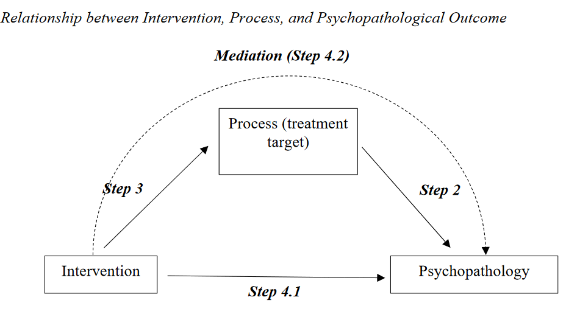

Clinical Analogue Studies
What are clinical analogue studies?
Clinical analogue studies are studies that use non-clinical samples to study processes related to psychopathology.
- For example: The role of attention in PTSD
- Is this a form of attentional bias towrds threat stimuli or an inability to disengage from threat stimuli?
They allow us to study processes related to psychopathology in a controlled environment.
They allow specific variables to be manipulated to identify mechanisms of change.
Why use clinical analogue studies? #1
Research with clinical groups is often correlational which does not allow drawing conclusions about what causation.
The use of experimental designs with clinical population can be ethically problematic, as exposure to stimuli (e.g., stressors) to measure “in the moment” effects, could be traumatic.
Retrospective reports lack objective information about external stumuli or order of events.
[@EhringEtAl2011]
Why use clinical analogue studies? #2
Subclinical measurements can allow accurate modelling of relevant processes (e.g. Depression: @HillEtAl1987).
Allows design of studies to better understand the relationship between treatment -> process and process -> outcome [@EhringEtAl2022]
Allows control and focus on specific variables to identify mechanisms of change [@EhringEtAl2022]
Intervention -> process -> outcome

Clinical relevance of analogue studies
“the nature and intensity of the target problem, not the clinical status of the subjects, are the critical variables in analogue research” (e.g., fear and phobias: @BorkovecRachman1979, p. 253).
Basic research has helped identify etiological factors in the development of many disorders (e.g. OCD: @Gibbs1996)
Symptoms can be prevalent in non-clinical populations, with similar qualitative expressions of experience and similar causal and maintenance factors [@AbramowitzEtAl2014, @AbramowitzEtAl2001, @PuckettEtAl]
Limitations of clinical analogue studies? #2
Limitations of clinical analogue studies? #2
The replication crisis in psychology might seem like an issue for clinical analogues. However, the issues that have been identified as major factors include:
- Lack of sufficient power in studies
- Reliance on findings from single studies that have yet to be replicated
- Weakness in research designs
- Over-reliance on or misunderstanding of NHST
- Diagnostic unreliability
- Selective reporting of results